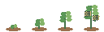
PadiEmpat fase tanaman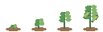
TimunEmpat fase tanaman Kacang panjangEmpat fase tanaman
Kacang panjangEmpat fase tanaman Kangkung daratEmpat fase tanaman
Kangkung daratEmpat fase tanaman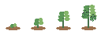
Bayam cabutEmpat fase tanaman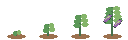
TerungEmpat fase tanaman TomatEmpat fase tanaman
TomatEmpat fase tanaman OyongEmpat fase tanaman
OyongEmpat fase tanaman JagungEmpat fase tanaman
JagungEmpat fase tanaman Kacang tanahEmpat fase tanaman
Kacang tanahEmpat fase tanaman KedelaiEmpat fase tanaman
KedelaiEmpat fase tanaman Kacang hijauEmpat fase tanaman
Kacang hijauEmpat fase tanaman JaheEmpat fase tanaman
JaheEmpat fase tanaman KunyitEmpat fase tanaman
KunyitEmpat fase tanaman KencurEmpat fase tanaman
KencurEmpat fase tanaman TemulawakEmpat fase tanaman
TemulawakEmpat fase tanaman PepayaEmpat fase tanaman
PepayaEmpat fase tanaman ManggaEmpat fase tanaman
ManggaEmpat fase tanaman Jambu bijiEmpat fase tanaman
Jambu bijiEmpat fase tanaman KopiEmpat fase tanaman
KopiEmpat fase tanaman KakaoEmpat fase tanaman
KakaoEmpat fase tanaman KelapaEmpat fase tanaman
KelapaEmpat fase tanaman TehEmpat fase tanaman
TehEmpat fase tanaman CengkehEmpat fase tanaman
CengkehEmpat fase tanaman PalaEmpat fase tanaman
PalaEmpat fase tanaman SaguEmpat fase tanaman
SaguEmpat fase tanaman KentangEmpat fase tanaman
KentangEmpat fase tanaman KubisEmpat fase tanaman
KubisEmpat fase tanaman BuncisEmpat fase tanaman
BuncisEmpat fase tanaman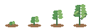
PareEmpat fase tanaman Labu kuningEmpat fase tanaman
Labu kuningEmpat fase tanaman KecipirEmpat fase tanaman
KecipirEmpat fase tanaman OkraEmpat fase tanaman
OkraEmpat fase tanaman LeuncaEmpat fase tanaman
LeuncaEmpat fase tanaman Gambas ularEmpat fase tanaman
Gambas ularEmpat fase tanaman CaisimEmpat fase tanaman
CaisimEmpat fase tanaman PakcoyEmpat fase tanaman
PakcoyEmpat fase tanaman KatukEmpat fase tanaman
KatukEmpat fase tanaman KenikirEmpat fase tanaman
KenikirEmpat fase tanaman KemangiEmpat fase tanaman
KemangiEmpat fase tanaman GenjerEmpat fase tanaman
GenjerEmpat fase tanaman KapriEmpat fase tanaman
KapriEmpat fase tanaman BrokoliEmpat fase tanaman
BrokoliEmpat fase tanaman Kembang kolEmpat fase tanaman
Kembang kolEmpat fase tanaman LobakEmpat fase tanaman
LobakEmpat fase tanaman BitEmpat fase tanaman
BitEmpat fase tanaman PaprikaEmpat fase tanaman
PaprikaEmpat fase tanaman ZukiniEmpat fase tanaman
ZukiniEmpat fase tanaman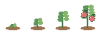
Labu siamEmpat fase tanaman SeladaEmpat fase tanaman
SeladaEmpat fase tanaman Sawi putihEmpat fase tanaman
Sawi putihEmpat fase tanaman SeledriEmpat fase tanaman
SeledriEmpat fase tanaman Bawang daunEmpat fase tanaman
Bawang daunEmpat fase tanaman KailanEmpat fase tanaman
KailanEmpat fase tanaman PeterseliEmpat fase tanaman
PeterseliEmpat fase tanaman Selada airEmpat fase tanaman
Selada airEmpat fase tanaman Bawang putihEmpat fase tanaman
Bawang putihEmpat fase tanaman Bawang merahEmpat fase tanaman
Bawang merahEmpat fase tanaman LengkuasEmpat fase tanaman
LengkuasEmpat fase tanaman Temu kunciEmpat fase tanaman
Temu kunciEmpat fase tanaman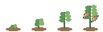
LempuyangEmpat fase tanaman Serai dapurEmpat fase tanaman
Serai dapurEmpat fase tanaman Pandan wangiEmpat fase tanaman
Pandan wangiEmpat fase tanaman SalamEmpat fase tanaman
SalamEmpat fase tanaman Jeruk purutEmpat fase tanaman
Jeruk purutEmpat fase tanaman MintEmpat fase tanaman
MintEmpat fase tanaman Salam kojaEmpat fase tanaman
Salam kojaEmpat fase tanaman Jeruk limauEmpat fase tanaman
Jeruk limauEmpat fase tanaman Belimbing wuluhEmpat fase tanaman
Belimbing wuluhEmpat fase tanaman SingkongEmpat fase tanaman
SingkongEmpat fase tanaman Ubi jalarEmpat fase tanaman
Ubi jalarEmpat fase tanaman TalasEmpat fase tanaman
TalasEmpat fase tanaman GarutEmpat fase tanaman
GarutEmpat fase tanaman GanyongEmpat fase tanaman
GanyongEmpat fase tanaman SorgumEmpat fase tanaman
SorgumEmpat fase tanaman JewawutEmpat fase tanaman
JewawutEmpat fase tanaman Kacang merahEmpat fase tanaman
Kacang merahEmpat fase tanaman Kacang tunggakEmpat fase tanaman
Kacang tunggakEmpat fase tanaman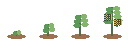
WijenEmpat fase tanaman PorangEmpat fase tanaman
PorangEmpat fase tanaman SemangkaEmpat fase tanaman
SemangkaEmpat fase tanaman MelonEmpat fase tanaman
MelonEmpat fase tanaman BlewahEmpat fase tanaman
BlewahEmpat fase tanaman Timun suriEmpat fase tanaman
Timun suriEmpat fase tanaman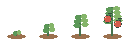
StroberiEmpat fase tanaman MarkisaEmpat fase tanaman
MarkisaEmpat fase tanaman AvokadEmpat fase tanaman
AvokadEmpat fase tanaman ApelEmpat fase tanaman
ApelEmpat fase tanaman KesemekEmpat fase tanaman
KesemekEmpat fase tanaman Jambu airEmpat fase tanaman
Jambu airEmpat fase tanaman Jeruk siamEmpat fase tanaman
Jeruk siamEmpat fase tanaman Jeruk keprokEmpat fase tanaman
Jeruk keprokEmpat fase tanaman Jeruk baliEmpat fase tanaman
Jeruk baliEmpat fase tanaman Jeruk nipisEmpat fase tanaman
Jeruk nipisEmpat fase tanaman LemonEmpat fase tanaman
LemonEmpat fase tanaman DurianEmpat fase tanaman
DurianEmpat fase tanaman RambutanEmpat fase tanaman
RambutanEmpat fase tanaman ManggisEmpat fase tanaman
ManggisEmpat fase tanaman DukuEmpat fase tanaman
DukuEmpat fase tanaman LangsatEmpat fase tanaman
LangsatEmpat fase tanaman SalakEmpat fase tanaman
SalakEmpat fase tanaman NangkaEmpat fase tanaman
NangkaEmpat fase tanaman CempedakEmpat fase tanaman
CempedakEmpat fase tanaman SukunEmpat fase tanaman
SukunEmpat fase tanaman SirsakEmpat fase tanaman
SirsakEmpat fase tanaman SrikayaEmpat fase tanaman
SrikayaEmpat fase tanaman SawoEmpat fase tanaman
SawoEmpat fase tanaman BelimbingEmpat fase tanaman
BelimbingEmpat fase tanaman Buah nagaEmpat fase tanaman
Buah nagaEmpat fase tanaman DelimaEmpat fase tanaman
DelimaEmpat fase tanaman KelengkengEmpat fase tanaman
KelengkengEmpat fase tanaman KedondongEmpat fase tanaman
KedondongEmpat fase tanaman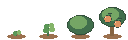
MatoaEmpat fase tanaman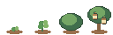
KecapiEmpat fase tanaman JamblangEmpat fase tanaman
JamblangEmpat fase tanaman PetaiEmpat fase tanaman
PetaiEmpat fase tanaman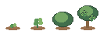
JengkolEmpat fase tanaman MelinjoEmpat fase tanaman
MelinjoEmpat fase tanaman LadaEmpat fase tanaman
LadaEmpat fase tanaman Kayu manisEmpat fase tanaman
Kayu manisEmpat fase tanaman VaniliEmpat fase tanaman
VaniliEmpat fase tanaman KapulagaEmpat fase tanaman
KapulagaEmpat fase tanaman KemiriEmpat fase tanaman
KemiriEmpat fase tanaman Asam jawaEmpat fase tanaman
Asam jawaEmpat fase tanaman KluwekEmpat fase tanaman
KluwekEmpat fase tanaman PinangEmpat fase tanaman
PinangEmpat fase tanaman Jambu meteEmpat fase tanaman
Jambu meteEmpat fase tanaman ArenEmpat fase tanaman
ArenEmpat fase tanaman TebuEmpat fase tanaman
TebuEmpat fase tanaman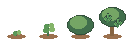
Kelapa sawitEmpat fase tanaman MawarEmpat fase tanaman
MawarEmpat fase tanaman KrisanEmpat fase tanaman
KrisanEmpat fase tanaman Sedap malamEmpat fase tanaman
Sedap malamEmpat fase tanaman GladiolEmpat fase tanaman
GladiolEmpat fase tanaman MelatiEmpat fase tanaman
MelatiEmpat fase tanaman AnggrekEmpat fase tanaman
AnggrekEmpat fase tanaman PohpohanEmpat fase tanaman
PohpohanEmpat fase tanaman TespongEmpat fase tanaman
TespongEmpat fase tanaman MangkokanEmpat fase tanaman
MangkokanEmpat fase tanaman KetumbarEmpat fase tanaman
KetumbarEmpat fase tanaman KucaiEmpat fase tanaman
KucaiEmpat fase tanaman LokioEmpat fase tanaman
LokioEmpat fase tanaman PegaganEmpat fase tanaman
PegaganEmpat fase tanaman Cincau hijauEmpat fase tanaman
Cincau hijauEmpat fase tanaman SujiEmpat fase tanaman
SujiEmpat fase tanaman KecombrangEmpat fase tanaman
KecombrangEmpat fase tanaman Temu hitamEmpat fase tanaman
Temu hitamEmpat fase tanaman Temu putihEmpat fase tanaman
Temu putihEmpat fase tanaman BangleEmpat fase tanaman
BangleEmpat fase tanaman KraiEmpat fase tanaman
KraiEmpat fase tanaman Cabai gendotEmpat fase tanaman
Cabai gendotEmpat fase tanaman Kacang koro pedangEmpat fase tanaman
Kacang koro pedangEmpat fase tanaman RadisEmpat fase tanaman
RadisEmpat fase tanaman KaleEmpat fase tanaman
KaleEmpat fase tanaman Swiss chardEmpat fase tanaman
Swiss chardEmpat fase tanaman AdasEmpat fase tanaman
AdasEmpat fase tanaman Bawang preiEmpat fase tanaman
Bawang preiEmpat fase tanaman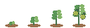
KohlrabiEmpat fase tanaman Kubis brusselEmpat fase tanaman
Kubis brusselEmpat fase tanaman ParsnipEmpat fase tanaman
ParsnipEmpat fase tanaman Terung belandaEmpat fase tanaman
Terung belandaEmpat fase tanaman MurbeiEmpat fase tanaman
MurbeiEmpat fase tanaman RasberiEmpat fase tanaman
RasberiEmpat fase tanaman CiplukanEmpat fase tanaman
CiplukanEmpat fase tanaman GembiliEmpat fase tanaman
GembiliEmpat fase tanaman GadungEmpat fase tanaman
GadungEmpat fase tanaman SuwegEmpat fase tanaman
SuwegEmpat fase tanaman BengkuangEmpat fase tanaman
BengkuangEmpat fase tanaman HanjeliEmpat fase tanaman
HanjeliEmpat fase tanaman Kacang bogorEmpat fase tanaman
Kacang bogorEmpat fase tanaman Kacang gudeEmpat fase tanaman
Kacang gudeEmpat fase tanaman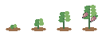
Kacang komakEmpat fase tanaman Bunga matahariEmpat fase tanaman
Bunga matahariEmpat fase tanaman Jambu bolEmpat fase tanaman
Jambu bolEmpat fase tanaman KawistaEmpat fase tanaman
KawistaEmpat fase tanaman Buah mentegaEmpat fase tanaman
Buah mentegaEmpat fase tanaman GandariaEmpat fase tanaman
GandariaEmpat fase tanaman BacangEmpat fase tanaman
BacangEmpat fase tanaman RukamEmpat fase tanaman
RukamEmpat fase tanaman CermaiEmpat fase tanaman
CermaiEmpat fase tanaman HelikoniaEmpat fase tanaman
HelikoniaEmpat fase tanaman AnyelirEmpat fase tanaman
AnyelirEmpat fase tanaman LiliEmpat fase tanaman
LiliEmpat fase tanaman AsterEmpat fase tanaman
AsterEmpat fase tanaman TelangEmpat fase tanaman
TelangEmpat fase tanaman Kangkung airEmpat fase tanaman
Kangkung airEmpat fase tanaman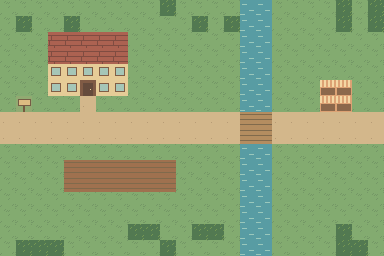
RegolKebun awal dan warung · pasirluyu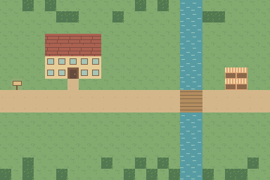
AntapaniPersemaian warga · antapani-tengah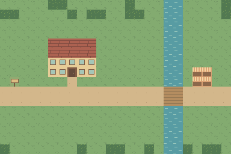
Bandung KidulPengumpulan bahan kompos · mengger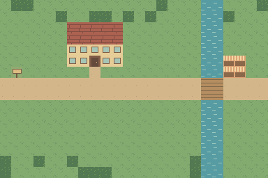
BuahbatuBenih sayur dan polong · jatisari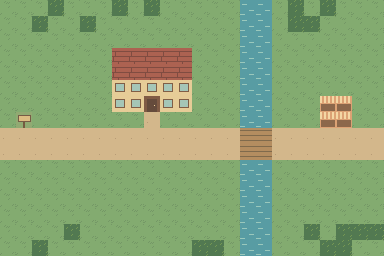
LengkongDapur pesanan lalapan · lingkar-selatan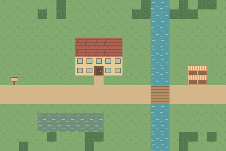
GedebageSawah, tegalan dan tata air · cimincrang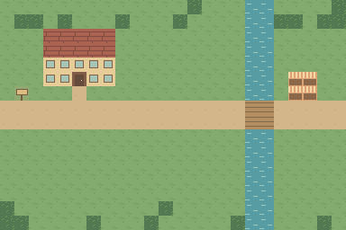
RancasariPembesaran ikan air tawar · derwati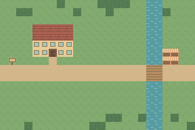
ArcamanikBengkel perkakas dan pompa · sukamiskin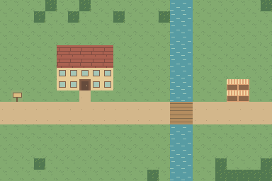
PanyileukanPengeringan hasil sawah · mekarmulya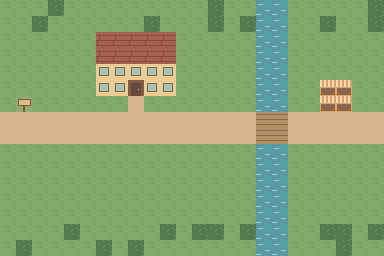
Bandung KulonPengolahan kedelai · cibuntu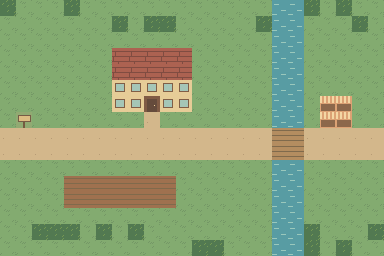
CibiruKebun lereng dan kumbung · cisurupan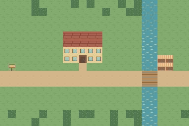
CidadapUji petak sayuran sejuk · ciumbuleuit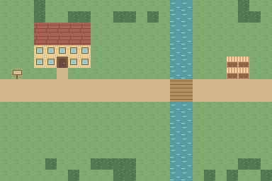
SukasariBank benih dan pertukaran varietas · isola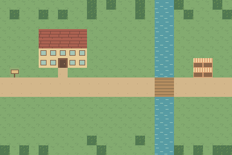
CoblongSekolah kebun · sadang-serang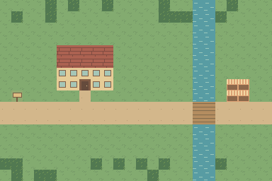
MandalajatiKonservasi tanah kebun · karang-pamulang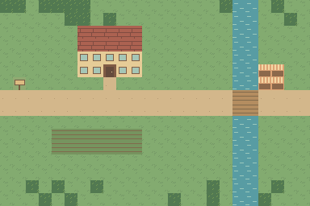
UjungberungKebun buah dan mitra ternak · pasirjati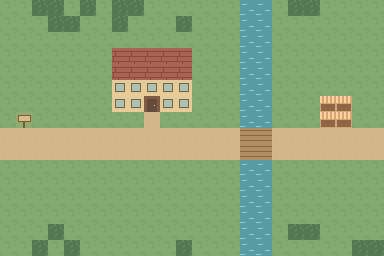
Cibeunying KalerPembibitan bunga potong · neglasari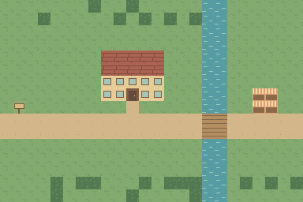
Cibeunying KidulPentas warga dan pesanan hajatan · padasuka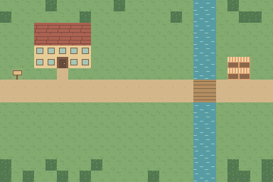
BatununggalRajut dan tas belanja guna ulang · binong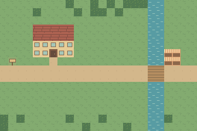
Bojongloa KidulAlas kaki untuk kerja kebun · cibaduyut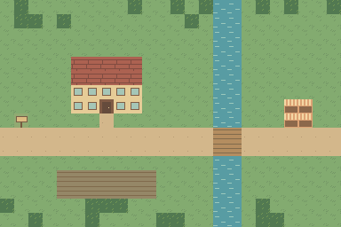
AstanaanyarJahe dan perdagangan rempah · karasak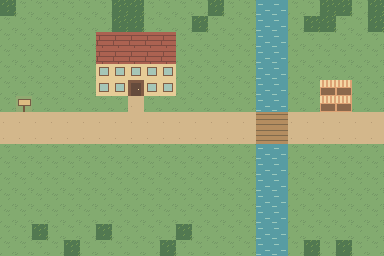
Bandung WetanRadio informasi panen · tamansari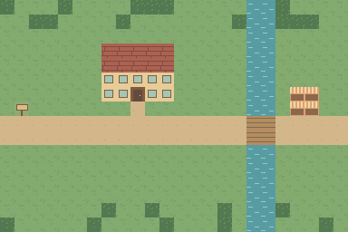
SukajadiPerangkai bunga pesanan · sukagalih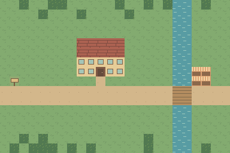
CinamboRumah kemas hasil kebun · babakan-penghulu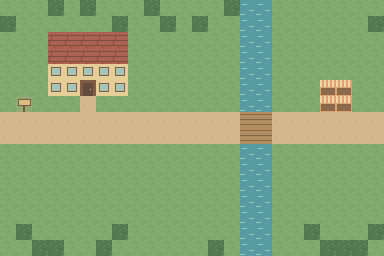
KiaracondongBursa muatan antarkebun · babakan-sari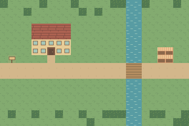
Babakan CiparayPasar induk dan pesanan grosir · babakan-ciparay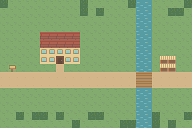
AndirPerdagangan eceran dan titip jual · kebon-jeruk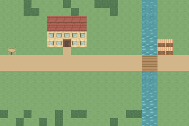
CicendoPengiriman pesanan mendesak · arjuna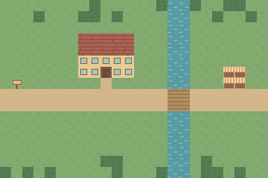
Bojongloa KalerPembukuan dan kliring koperasi · jamika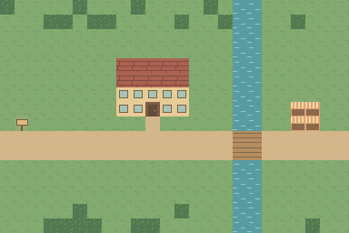
Sumur BandungArsip panen dan pameran kota · braga